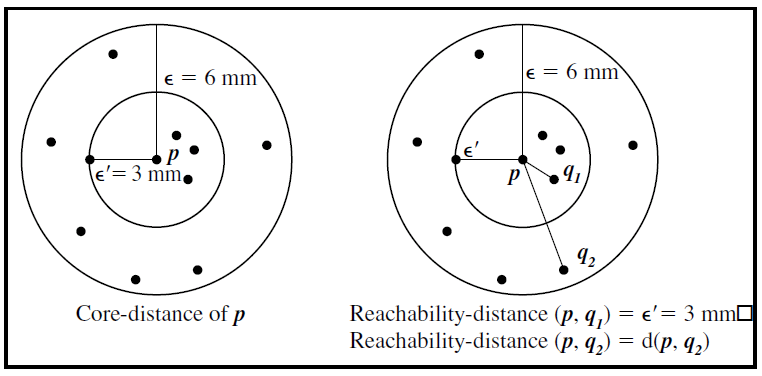
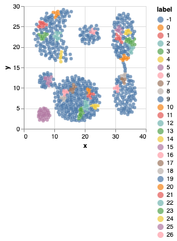

cluster.OPTICS
Clustering using OPTICS - Unsupervised learning
Density based clustering
Clustering is an unsupervised learning method that groups a set of given data points into well separated subsets. Unsupervised learning methods are used when there is no specific result we are trying to predict. Instead, we are clustering the data together based on the similarity of observations. To help clarify, let’s take Netflix as an example. Based on previous shows you have watched in the past, Netflix will recommend shows for you to watch next. Netflix gives recommendations by clustering its users together based on similarity of interests. This is exactly how unsupervised learning works. It simply clusters observations together based on similarity, and makes accurate conclusions based on the clusters.
Density based clustering is a technique that allows to divide data in to groups with similarities. It dows not require to specify the number of groups. It divides the data based on density level(high & low). The most popular density based clustering algorithm is DBSCAN. It has two must have parameters: 1. Epsilon Maximum radius of a cluster 2. Min_val Minimum number of data points a cluster can have

Though DBSCAN works well in finding outliers and seperating density based datas, it can be used only when there is a drop in densities. It also struggles with high dimensionality data.And sometimes identifying the parameters becomes a difficult task. This is where OPTICS becomes very useful which works well with varying densities.
OPTICS & its algorithm
OPTICS - Ordering Points to Identify Cluster Structure is relative to DBSCAN and requires very little parameter tuning. It requires the same epsilon and min_points as DBSCAN, but epsilon is theoritically unnecessary and is used only when there is a need to reduce the runtime complexity of an algorithm. It includes two additional concepts called core distance and reachability distance. All distances used inside OPTICS are calculated using the same Euclidean distance - which is used for the neighborhood calculations. An interesting property of density based clustering is that these algorithms do not assume clusters to have a particular shape. The parameter epsilon is, strictly speaking, not necessary. It can simply be set to the maximum possible value. When a spatial index is available, however, it does play a practical role with regards to complexity. OPTICS abstracts from DBSCAN by removing this parameter, at least to the extent of only having to give the maximum value. Ordering uses two concepts called "core distance" and "reachability distance".

Like DBSCAN, OPTICS also has a core object(a datapoint is considered to be a core object if within the radius(ϵ') it has the minimum data points).If you want to calculate core distance from any point p, it is the minimum value ϵ'(epsilon) which makes a distinct point a core point, such that meets the neighborhood of p has atleast the minimum number of points specified. So ϵ' is the minimum threshold that makes p a core object.
Reachability Distance - The Reachability distance between a point p and q2 is the maximum of the Core Distance of p and the Euclidean Distance(or some other distance metric) between p and q2. Note that The Reachability Distance is not defined if q2 is not a Core point. Here the reachability distance between p and q1 is nothing but the core distnace(ϵ'). The distance between p and q2 is the euclidean distance - this is beacuse the distance between p and q2 is gretaer than the core distance.
Sample code
Importing the libraries and getting the aggregation dataset.
import pandas as pd
import altair as alt
from sklearn.cluster.optics_ import OPTICS, cluster_optics_dbscan
import sklearn.cluster as cluster
agg = pd.read_csv('./datasets/aggregation.csv')
Instatntiating the cluster.OPTICS model with all its default parameters. https://scikit-learn.org/stable/modules/generated/sklearn.cluster.OPTICS.html provides all the details about the parameters used inside the model.
model = cluster.OPTICS(cluster_method='xi')
X = data[['x', 'y']].copy()
model.fit(X)
X['label'] = model.labels_
p = (alt.Chart(X).mark_circle()
.encode(x='x', y='y', color='label:N')
.properties(width=200, height=200))
p.display()
